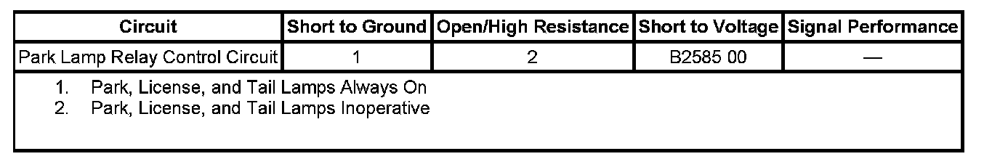

B2585
DTC B2585
DTC DESCRIPTOR
DTC B2585 00
Park Lamp Control Circuit
DIAGNOSTIC FAULT INFORMATION

Perform the Diagnostic System Check - Vehicle prior to using this diagnostic procedure. Initial Inspection and Diagnostic Overview
CIRCUIT/SYSTEM DESCRIPTION
Voltage is applied at all times to the park lamp relay from battery voltage. When the headlamp switch is placed in the PARK position and the body control module (BCM) commands the park lamps ON, the BCM then applies a ground to the park lamp relay control circuit. This engages the relay and applies voltage through the park lamp fuses and to all the park, license, and tail lamps.
CONDITIONS FOR RUNNING THE DTC
- The Ignition is ON.
- The park lamps must be commanded ON by the BCM.
CONDITIONS FOR SETTING THE DTC
The BCM detects a short to voltage on the park lamp relay control circuit.
ACTION TAKEN WHEN THE DTC SETS
All park, license, and tail lamps are inoperative.
CONDITIONS FOR CLEARING THE DTC
- The conditions for setting the DTC are no longer present.
- A history DTC clears after 100 malfunction-free ignition cycles.
- The BCM receives the clear code command from the scan tool.
CIRCUIT/SYSTEM VERIFICATION
Ignition ON, activate the Parking Lamp output control on the scan tool. The Park Lamp Relay Command parameter in the data list should display On and the park lamps should illuminate.
CIRCUIT/SYSTEM TESTING
1. Ignition OFF, remove the park lamp relay from the underhood fuse block.
2. Ignition ON, test for voltage at the relay control circuit terminal of the underhood fuse block.
- If voltage is present, test the control circuit for a short to voltage. If all circuits/connections test normal, replace the relay.
- If voltage is not present, replace the BCM.
REPAIR INSTRUCTIONS
Perform the Diagnostic Repair Verification after completing the diagnostic procedure.
- Relay Replacement (Attached to Wire Harness) Relay Replacement (Within an Electrical Center)
- Control Module References for BCM replacement, setup, and programming. Verification Tests Programming and Relearning